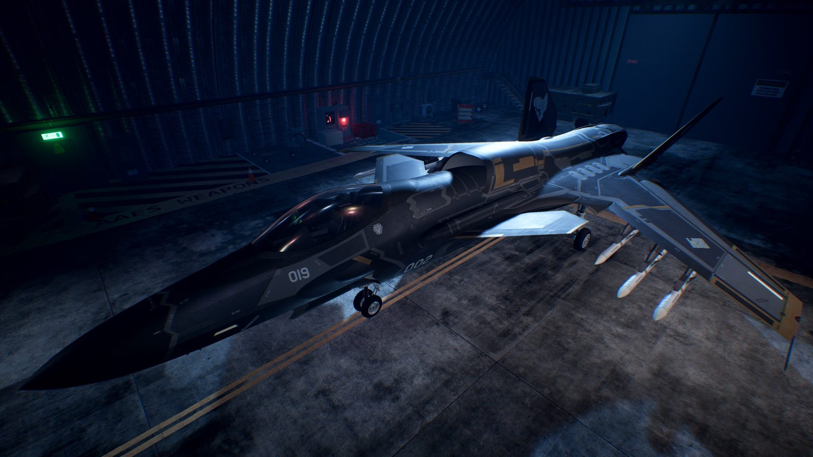

FILE NO. ACX-01 // ADVANCE SUPPORT FIGHTER
ASF-X Shinden II
震电 II —— 传承「震电」之名的超机动支援战机
由机械设计师河森正治操刀、致敬二战 J7W1「震电」的架空战机。上下纵列双发布局——上引擎机背进气、下引擎翼根进气，搭配可变前掠主翼、前置鸭翼与可变 V 型全动尾翼，可依速度切换气动布局，兼顾高速冲刺、低速缠斗与垂直起降。从《突击地平线》的试验机到《无限》背脊犬中队主力，再登陆《皇牌空战7》，跨越多个世界观续写空战传奇。
纵列双发
可变前掠翼
STOVL 垂直起降